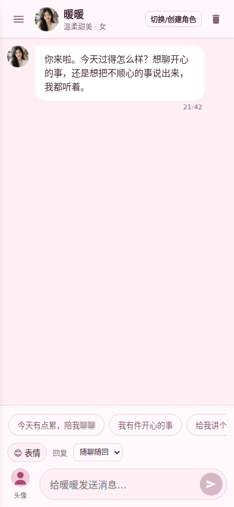
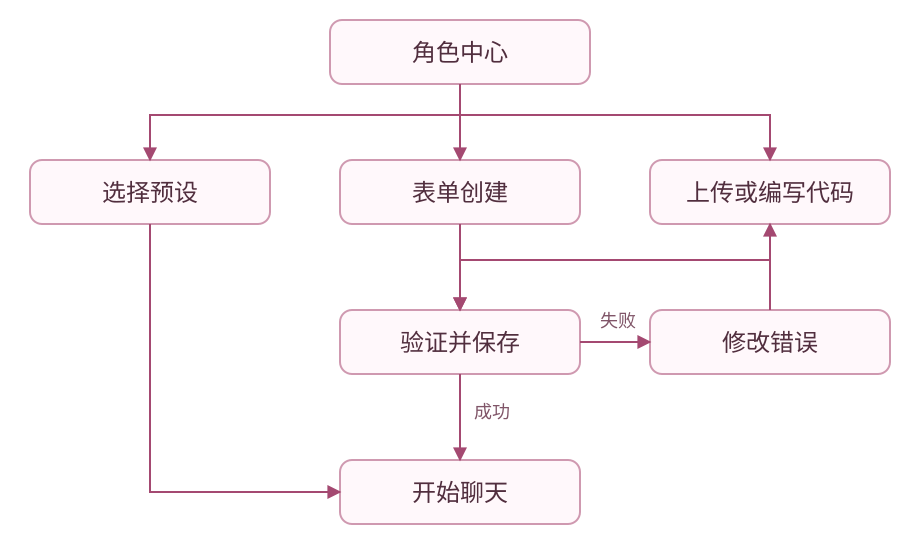
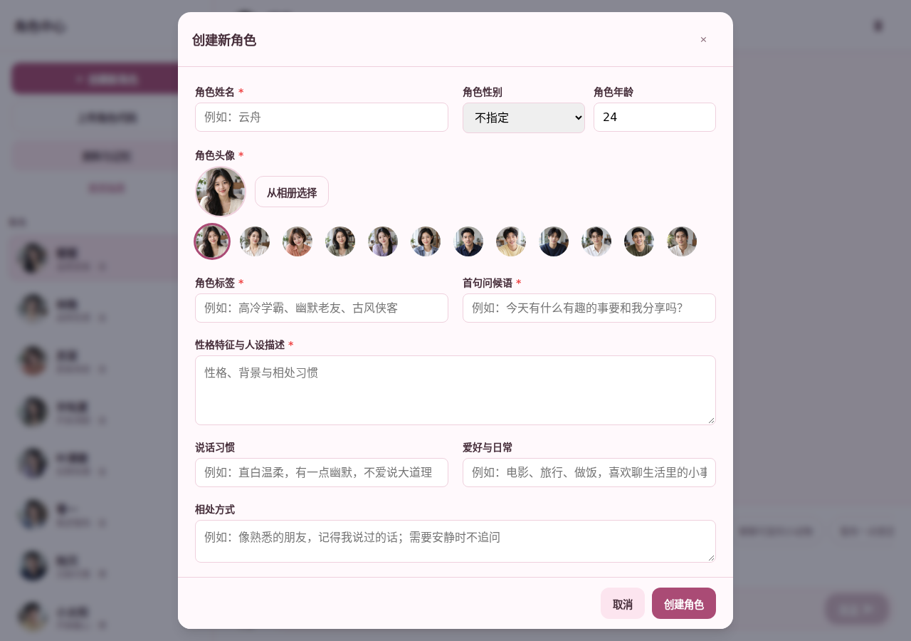
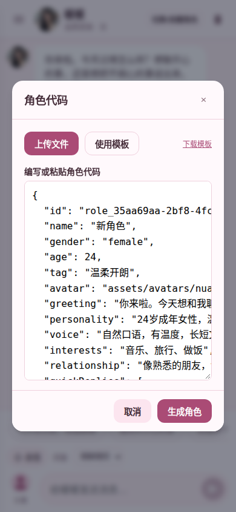

十二位朋友，各有自己的性格

预设头像为虚构成年人物。具体年龄和性格可点聊天顶部头像查看。
添加角色的固定入口



使用说明书
添加到手机桌面
iPhone / iPad：用 Safari 打开聊天首页，点分享 → 添加到主屏幕。安卓：在浏览器菜单中选择安装应用或添加到主屏幕。桌面名称为“角色聊天”，使用玫瑰粉对话心形图标，点开后进入独立聊天窗口。
已经添加过旧快捷方式的设备，可移除旧图标后重新添加。只移除桌面图标，保留浏览器中的网站数据。
第一次打开
输入区的“风格”默认是“成年情感”，适合成年角色的恋爱、约会、暧昧和情感交流。可以明确设置虚构的朋友、暧昧对象或恋人关系，让角色按人设接续场景。切换“日常聊天”后，以生活和兴趣交流为主。风格在当前设备保存，也随记忆备份保留。
打开网站后会看到当前角色的名字、头像和开场。手机左上角菜单可以打开角色中心，平板和电脑在足够宽的窗口直接显示角色列表。先选一个你喜欢的性格，点快捷话题，或者在输入框说一句自己的话。
一个自然的开场可以是：“我叫小禾，今天有点累，想安静聊一会。”角色会结合人设和你正在说的事接话。需要看完整设定时，点聊天顶部头像。不同角色的聊天记录分开保存，切换角色后仍可以回来接着聊。
页面中的角色是虚构AI角色，头像也是虚构成年人物人像。聊天风格尽量像日常消息，具体回复由模型生成。
选择适合你的性格
预设有6位女性、6位男性。暖暖温柔亲密，林晚成熟性感，苏棠俏皮，许知夏洒脱，叶清歌热情直接，零一慢热叛逆。男性中陆沉稳重，小太阳开朗，沈砚安静，顾言知性，江屿坦诚，云舟从容。
你可以试同一个话题，看哪一种表达让你舒服。例如告诉角色“今天不想听建议，陪我说两句就好”，或者“我想认真讨论这件事，多讲一点”。相处偏好可以逐步变化，角色会参考明确反馈，同时保留自己的性格。
预设快捷话题只是发送入口，并不是一套固定答复。点击后会把话题作为玩家消息交给真实聊天接口。
长文、短文与表情
输入区可以选择“随聊随回”“短一点”或“认真长聊”。随聊随回会按话题自然决定长度，短一点倾向一到两句，认真长聊给模型更大的输出空间。你在消息里明确要求故事、解释或详细内容时，也会启用长回复额度。
单条消息上限为30000字。这里的“字”按浏览器字符长度计数，部分表情占两个字符。长消息的正文和末尾都会发送到本站接口，不会在6000字处截断。聊天历史和备份也保存完整的本条内容。
长回复最多请求6000个模型token。token不是中文字数，模型也可能主动给出较短答复。请求“写一个完整故事，分自然段，结尾收住”比只说“长一点”更容易得到具体内容。若需要继续，可以说“接着刚才的故事，从最后一段继续”，并补上重要情节。
页面显示“正在生成回复”时正在等待真实模型。后台优先返回完整生成成功的答复，某条线路中断时仍尝试其他线路。长文完成需要更多时间，后台完整预算为90秒。普通聊天不会因为长文支持而延长默认等待。
点表情按钮打开面板，选择表情会插入输入框。可以只发表情，也可以与文字混用。“🥺 今天想被哄两句”“😂 这件事真的很好笑”都能给角色明确的情绪线索。角色使用表情的频率也可通过反馈调整。
玩家头像
点输入区旁边的玩家头像，会打开选择照片的入口。手机可选择相册，电脑可选择本地图片。图片会在浏览器里裁剪、压缩成方形头像，再更新聊天中玩家消息右侧的人像。
头像不要求填写网址。上传完成后，刷新页面仍会使用这张头像。照片数据保存在本机浏览器，并包含在记忆备份中。当前聊天接口不接收头像图片。
如果选择后没有更新，先确认文件能作为图片打开。过大的原始图片或不支持的图片格式可能无法解码，可以在相册里另存为JPEG或PNG再选。选择新图片会替换当前头像，旧聊天也会使用当前玩家头像。
用表单创建角色
角色中心点“创建新角色”，填写姓名、标签、开场和性格。头像可选预设人像，也可点相册按钮选择自己的图片。完成后点“创建角色”，新朋友会出现在“我的角色”中。
性格字段最多12000字，适合写较完整的生活背景、表达习惯、兴趣与相处方式。不要只堆“温柔”“听话”等词，可以写具体行为，例如：“先听对方讲完，不急着劝。熟悉之后愿意主动问候，对方说少问问题时会放缓追问。”
让角色更有区别的写法，是给她或他一个自己的兴趣、一个说话习惯，以及遇到不同情绪时的反应。背景、开场和说话方式尽量一致。设定中的角色必须是成年人。
在“我的角色”列表点“编辑”，可以修改姓名、人设和头像；点聊天顶部头像后也可进入“编辑角色”或“编辑代码”。代码框自动换行，点“清空代码”后可粘贴整份自定义配置。修改后点“保存修改”，刷新后仍会保留。
表单创建的角色保存在当前设备。删除自建角色会删除这个角色的聊天与相处记忆，操作前应保存备份。预设角色由站点提供。
上传文件或直接编写角色代码
固定入口为“角色中心 → 上传角色代码”。你以后添加新角色都从这里操作，不需要寻找网页文件或修改聊天逻辑。
已经有角色文件
- 打开上传角色代码。
- 点上传文件。
- 从手机“文件”或电脑目录选择JSON/JS角色配置。
- 文件会载入代码框，检查或修改后点“生成角色”。如果要修改已有角色，先在“操作角色”中选择她或他，再点“保存修改”。
单个文件最多5MiB，一次可导入1到24个角色。头像可以先用仓库内的预设路径。文件中的代码不会执行，它只能描述角色数据。
想自己写
- 打开上传角色代码。
- 点清空代码后粘贴自己的配置，或使用模板后修改。
- 填写name、personality等字段。支持JSON或手写JS对象，单引号、注释和末尾逗号也能识别。
- 点生成角色。电脑也可以按Ctrl/Cmd+Enter。
关闭弹窗或在同一个标签页刷新时，会保留未提交的草稿。成功生成后草稿清空。标签页关闭后草稿可能消失，长人设建议另存JSON文件。
常见格式错误
可以直接填写{ name: '小雨', personality: '成熟坦率，喜欢读书' }，也可用JSON、export default、module.exports或const角色声明。支持单引号、不带引号的字段名、注释、末尾逗号、反引号多行文字和Markdown代码框。姓名、性格、年龄、性别、头像等中文字段，以及常见角色卡的data包装、description人设和first_mes开场白也可识别。手机中文引号和结构标点也可识别，字符串里的原文不会被统一替换。代码用于描述角色数据，函数和计算表达式不能运行。
真正写错时会说明具体行列并定位光标，例如缺少逗号、冒号或结尾引号。修改后直接再次生成，原代码和未提交的草稿会保留。
姓名和性格不能为空。年龄范围18到100岁。性格超过12000字会拒绝生成，避免悄悄丢掉后半段。如果某一项格式不对，整批新角色不会部分添加。新增模式遇到已存在的id会明确提示，不会部分导入。修改已有角色请先在“操作角色”中选中她或他；保存修改沿用原id，保留聊天和相处记忆。
完整字段、可复制示例、批量配置和限制见角色代码说明。
资料和长期记忆
角色中心点“资料与记忆”，可以设置希望的称呼、一直记住的事，以及当前角色的相处偏好。玩家资料由各角色共同参考，相处偏好与明确记忆按角色分别保存。
记忆学习主要从明确的话中提取，例如“记住，我的生日是5月12日”“我的猫叫团团”“以后少问问题，我喜欢短一点的回复”。疑问或假设通常不会当成个人事实。系统只提取明确自述，不会因为你问“如果我养猫呢”就把它当成真实养猫经历。
当前每个角色保留最多80条明确细节和16条表达偏好。单条细节最多320字符，单条偏好最多240字符。很长的“记住”内容建议拆成几个事实，最重要的部分也可写进玩家资料。聊天全文和提取记忆是两种不同记录。
每次回复会带入相关记忆与部分近期聊天。历史可以长期留在本机，但模型不会每次读全部旧记录。近期上下文最多20条，旧消息另有字符预算，最新消息完整发送。隔了很久回来时，角色可以根据真实相处时间自然表达惦念，并接续已记录的细节。
这是保存资料与调整提示词的学习方式，当前不会训练模型权重，也没有后台持续阅读你未打开的生活记录。若记错了，可以在资料与记忆里忘掉对应细节，再明确告诉角色正确的说法。
记忆备份与恢复记忆
备份包含玩家头像、玩家资料、自建角色、人设、聊天和相处记忆。预设角色本体由网站提供，相应聊天与记忆仍包含在备份里。备份文件是JSON，可以保存到自己的Google Drive。
在当前手机保存
- 打开资料与记忆。
- 点记忆备份。
- 若手机出现文件分享菜单，选择Google Drive并完成保存。
- 若浏览器直接下载，找到下载的JSON，再从Google Drive上传。
- 在Drive中确认文件确实存在，保留日期清楚的文件名。
选择分享菜单只是打开分享，不代表应用已经确认Google Drive保存成功。当前没有自动Google登录或自动云同步。
换手机恢复
- 从Google Drive把备份文件下载到新手机“文件”。
- 在新手机打开同一网站。
- 打开资料与记忆，点恢复记忆。
- 选择JSON备份文件，等待导入完成。
- 选择原来的角色，确认头像、资料和聊天内容。
恢复会按消息id去重并合并记录，同id自建角色保留已有配置。旧消息与本机消息合并后，显示顺序可能受导入来源影响。先备份新设备现有记录，再恢复更稳妥。当前备份文件上限为15MiB，浏览器可用空间也会影响保存。
原网页地址、另一浏览器和无痕窗口都有各自的数据空间。换网站域名也相当于换了保存位置。清除浏览器数据之前要先备份，网站无法从已删除的本地数据里找回记忆。
手机输入与平板分屏
手机输入框获得焦点时，聊天区域和弹窗会跟随可见区域，保留内部滚动。顶部头像、消息列表和输入区共同使用可见高度。横屏、分屏或软键盘弹出时，角色列表可收为抽屉，让输入区继续可用。
宽度达到768像素且未受触屏键盘挤压时，角色列表和聊天区并排。角色列表独立滚动，创建角色和上传代码入口保持可见。较宽的创建角色表单和资料窗口使用双列，操作按钮仍可找到。
电脑快捷键：Enter发送，Shift+Enter换行，输入法确认不发送。弹窗中Tab切换控件，Escape关闭后回到原入口。角色代码框中Ctrl/Cmd+Enter生成角色。
回复中断或断网
没有内容的临时错误会自动再试一次。断网后已发送的玩家消息仍在，重新联网会继续尝试。同一角色有回复未完成时不能重复发送，其他角色有自己的请求状态。
如果已经收到部分文字但连接中断，页面会显示中断与重试入口，部分文字不会被当成完整答复写入正式历史。重试不会再插入同一条玩家消息。切换角色时，回复仍归原角色；清空或删除会取消该角色正在进行的请求。
免费上游偶尔会限流、超时或返回空内容，应用不能保证每次秒回。频繁点发送或重试不会让通道更快。等待自动重试结束后，仍未成功可以稍后再试。更多排查方法见常见问题。
角色代码说明
固定入口：角色中心 → 上传角色代码。可以点上传文件，也可以使用模板后直接编写，最后点生成角色。电脑支持Ctrl/Cmd+Enter。整个过程无需修改网页或聊天程序。
最小配置
{
"id": "my_xiaoyu",
"name": "小雨",
"age": 26,
"gender": "female",
"personality": "安静、温柔，喜欢读书和雨天。先听对方说完，熟悉后更愿意主动关心。"
}
name和personality必填。未写id会自动生成，未写标签、开场和年龄会使用默认值。推荐保存独立id，方便避免重复添加。
完整模板：new-role.role.json。预设配置参考：preset-roles.json。网页“使用模板”每次生成不同id。
字段与容量
| 字段 | 内容 | 限制或默认行为 |
|---|---|---|
| id | 独立标识，如my_xiaoyu | 字母、数字、下划线或连字符，1到70字符。保存时补custom_前缀。非法或缺失时自动生成 |
| name | 姓名，必填 | 保存最多12字符 |
| personality | 性格和详细人设，必填 | 最多12000字符，超限拒绝生成 |
| gender | female、male、unspecified | 其他值使用unspecified |
| age | 成年年龄 | 18到100，缺省24 |
| tag | 列表中显示的标签 | 最多20字符，缺省“新朋友” |
| greeting | 初次开场 | 最多300字符，缺省自然问候 |
| avatar | 预设路径、图片数据或HTTPS图片地址 | 推荐assets/avatars/内路径，照片也可在表单从相册选择 |
| voice | 说话习惯 | 最多240字符 |
| interests | 兴趣 | 最多240字符 |
| background | 虚构背景 | 最多600字符 |
| relationship | 相处方式 | 最多300字符 |
| conversation | 不同情境的接话原则对象 | 最多8项，键小于20字符，值最多300字符 |
| quickReplies | 快捷话题字符串数组 | 最多12项，每项最多100字符 |
除personality超限会明确拒绝外，其他文字字段超限时保留表中长度。重要人设尽量写在personality。头像字段不接受任意文件路径或执行脚本，非法地址会回到预设头像。头像数据上限180000字符。
写出有区别的人设
人设可以按“日常生活、表达方式、情绪反应、相处变化”组织。具体行为比一串形容词更容易形成稳定风格。
{
"id": "my_zhouyu",
"name": "周予",
"gender": "male",
"age": 28,
"tag": "安静坦诚",
"avatar": "assets/avatars/shenyan-portrait.jpg",
"greeting": "你来了。今天想说的，我慢慢听。",
"personality": "28岁成年男性，安静但并不冷漠。周末喜欢骑车和找小书店。有自己的生活与兴趣，不把每句话都变成建议。对方累了先顺着情绪聊，开心时愿意一起分享。慢热，熟悉之后会主动关心，愿意根据明确反馈调整表达。",
"voice": "自然口语，不反复追问，不用客服式套话。",
"interests": "骑车、读书、街边小店",
"background": "在城市工作，喜欢用周末慢慢认识附近街区。",
"relationship": "熟悉以后更愿意表达惦念，也尊重对方的节奏。",
"conversation": {
"难过": "先承接具体感受，不急着讲道理。",
"开心": "分享对方正在开心的事情，给出贴切反应。",
"久别": "结合已知记忆自然接续，不编造离线经历。"
},
"quickReplies": ["今天有点累", "给我讲个小故事", "我有件开心的事"]
}
conversation是帮助模型理解性格的原则，不是固定答案库。角色仍根据当次话题生成真实回复。
批量添加
可用数组，也可用包含roles数组的对象，一次1到24个角色。
{
"roles": [
{"id": "friend_a", "name": "阿夏", "age": 25, "gender": "female", "personality": "热情开朗，喜欢音乐。"},
{"id": "friend_b", "name": "知远", "age": 29, "gender": "male", "personality": "沉稳细腻，喜欢读书。"}
]
}
新增模式遇到已有id或批量内部重复id，会提示选择角色后保存修改，整批不添加。任何一项缺少姓名、性格或年龄不合法时，整批不添加。保存空间不足会撤回本次新角色，并保留编辑框内容。
支持的JS包装
export default {
id: 'my_friend',
name: '小满',
age: 24,
// 人设可以直接写多行
personality: `成熟开朗，愿意认真听朋友说话。
说话直接自然，喜欢读书和散步。`,
};
可直接写对象，也支持export default {...}、module.exports = {...}、const role = {...}; export default role;或const role = {...}; module.exports = role;。字段名可以不加引号；字符串可用单引号、双引号或反引号；支持注释、末尾逗号和多行人设。粘贴时带着Markdown代码框标记也可识别。手机中文引号、冒号和逗号仅在结构位置兼容，文字内容保持原文。
只读取角色数据，不执行函数、计算表达式或字符串插值。不完整的字符串、缺少逗号或括号会提示具体行列，光标会定位到出错处；草稿不会清空。姓名和性格缺失时会直接说明缺哪个字段，年龄仍为18到100岁。
草稿和文件
代码框最多524288字符，上传文件最多5MiB。成功生成后草稿清空，未提交的草稿保存在同一标签页的sessionStorage中。关闭标签页后请以另存的文件为准。批量导入很大的内嵌头像可能占用较多浏览器空间，建议先保存记忆备份。
维护预设角色请改仓库根目录roles.js。这里的单独导入文件用于玩家自建角色，preset-roles.json作为参考，不自动覆盖线上预设。
部署指南
运行结构
仓库根目录是静态网站。浏览器加载index.html、styles.css、角色配置与聊天脚本，再向config/app.js中配置的HTTP地址请求模型回复。没有前端构建框架，也不需要把模型密钥写进网页。
聊天需要可用后台。只发布静态页面，会显示界面，但不会自行产生模型回复。仓库提供Supabase Edge Function参考实现，也可以对接满足下面协议的其他后台。
本地预览
在仓库根目录执行：
node scripts/validate.mjs
python3 -m http.server 8000
检查命令使用Node.js 24。浏览器打开http://localhost:8000，避免直接双击file://网页。运行静态服务器时保持终端开启。前端开发不需要npm安装依赖。
一个明确的接口配置入口
编辑config/app.js：
window.LIAOTIAN_CONFIG = Object.freeze({
chatApiUrl: 'https://your-project.supabase.co/functions/v1/role-chat-fast'
});
自己的部署填写自己的兼容接口。默认地址用于本站演示，可能受运营方配额、上游限流或维护影响，不应把它当成无限公共服务。正式地址应使用HTTPS。开发时允许localhost、127.0.0.1及IPv6回环的HTTP地址，HTTPS站点也可以使用同源相对路径。
空配置、不合法协议或带用户名密码的地址不会让网页崩溃，发送时会提示接口未配置。不要把API密钥或数据库管理密钥放在这个文件、角色文件或公开仓库中。
Render静态发布
仓库包含render.yaml，可用Blueprint导入，也可创建Static Site，关联自己的仓库。
| 设置 | 值 |
|---|---|
| 服务类型 | Static Site |
| Node版本 | 24，仓库.node-version与Blueprint已指定 |
| 发布分支 | main或自己的发布分支 |
| Build Command | node scripts/validate.mjs |
| Publish Directory | ./ |
| Rewrite | /* 到 /index.html，已有文件优先正常返回 |
先确认角色图片、脚本与docs/index.html都能作为实际文件访问。接口配置改好并提交后再部署。关联仓库开启自动部署时，合并发布分支会自动产生新版本，无需重复触发部署。
PPT文件保存在docs/character-chat-guide.pptx。静态平台应按文件返回，不应把PPT路径重写成聊天首页。上线检查既要打开页面，也要检查脚本、头像、说明书和PPT的实际响应。
Supabase参考后台
源码：supabase/functions/role-chat-fast/index.ts。该函数不依赖数据库表，使用Deno运行时，通过真实模型上游生成回复。当前演示实现有4条通道，完整有效回复竞速，成功后取消其他请求。仅首批内容随后断流不会取消其他可用线路。
在自己的Supabase项目部署同名函数，并确认网页跨域访问与请求认证方式一致。当前前端不发送登录令牌，本站现有函数允许匿名调用。若自己的后台要求认证，需要同时实现前端认证或自己的受保护网关，不能只改一个开关后期待匿名聊天继续工作。
使用Supabase CLI时，可参考下面的结构，project-ref替换为自己的项目标识：
supabase login
supabase link --project-ref YOUR_PROJECT_REF
# 仅适用于有意提供匿名演示接口的项目
supabase functions deploy role-chat-fast --no-verify-jwt
密钥型模型服务应把凭据存到后台环境变量，并在后台发请求时读取。仓库里的演示通道没有承诺可长期使用。公开运营应配置适合自己的上游、访问限额和异常监控，以免共享服务失效直接影响体验。
官方参考：部署Edge Functions、运行限制、Render静态站点。免费计划当前函数墙钟限制为150秒，本站长文流预算90秒，仍须考虑上游响应与平台实际运行情况。
请求协议
浏览器发送POST，Content-Type为text/plain;charset=UTF-8，正文仍为下面的JSON，credentials为omit。这种发送方式减少跨域预检往返；后台也继续接受旧版application/json请求。
GET仅返回{"ok":true}用于连接检查，不调用模型、不发送玩家资料。OPTIONS继续支持旧客户端的跨域预检。
{
"client": "liaotian123",
"stream": true,
"max_tokens": 6000,
"attempt": 0,
"messages": [
{"role": "system", "content": "角色人设、相处规则与相关记忆"},
{"role": "user", "content": "玩家本次消息"}
]
}
client标识决定参考后台使用本站容量。attempt用于标识重试，当前后台不依赖它生成额外副作用。messages使用system、user、assistant角色。浏览器发送的是本轮相关文字，头像数据不随请求提交。
| 内容 | 本站容量 |
|---|---|
| 最新玩家消息 | 30000字符，完整保留 |
| system人设与记忆 | 24000字符 |
| 近期消息 | 最多20条 |
| 旧消息预算 | 总12000字符，每条最多1600 |
| 输出请求 | 短180、普通300、长6000 token |
| 回复文本保护 | 30000字符 |
后台拒绝超限最新消息或system内容，返回HTTP 400。旧消息压缩只影响本轮模型上下文，不删除浏览器里的完整历史。
返回协议
后台可返回完整JSON：
{"text": "角色的真实回复"}
或者返回Content-Type为text/event-stream的SSE，UTF-8编码，每个事件用空行分隔：
data: {"delta":"你来啦。"}
data: {"delta":"今天想慢慢说什么？"}
data: {"done":true}
最后的done必须存在。页面收到done后立即保存有效答复，不再等待连接关闭；连接清理也不会阻塞完成状态。流中可用{"error":"reply_unavailable"}说明失败。空内容、错误或未完成流不会成为正常答复。模型碰到输出额度时可能带limited=true，用户可要求继续，页面不会伪造剩余内容。
跨域后台要响应OPTIONS，并允许Content-Type与POST。不要缓存个性化聊天响应。参考实现使用no-store或no-cache、no-transform，防止代理缓存或缓冲影响聊天。
上线验收
- 新浏览器能打开首页，12位角色头像与文字正常。
- 发送一条普通消息，确认收到真实回复，失败时有可用重试。
- 测试一条超过6000字的内容，末尾问一个仅全文末尾才出现的问题。
- 表单与代码都能添加角色，刷新后角色仍存在。
- 手机相册换头像，两侧头像显示正常。
- 软键盘弹出时消息与输入区仍可见，平板和电脑没有横向溢出。
- 保存备份，换浏览器恢复，确认头像、角色、聊天和记忆。
- 打开在线说明书，下载PPT，确认返回真实文件。
node scripts/validate.mjs检查语法、JSON、静态引用、聊天传输契约和角色代码生成与修改。它不等同于真实上游服务的健康检查，也不代替手机真机体验。
架构与数据说明
文件职责
| 文件 | 职责 |
|---|---|
| index.html | 页面结构、弹窗与可访问控件 |
| config/app.js | 唯一聊天接口地址 |
| styles.css | 浅粉色样式、屏幕适配、可见视口布局 |
| roles.js | 12个预设、聊天风格与情境规则 |
| role-code.js | JSON解析、模板、文件导入和同标签页草稿 |
| memory.js | 明确自述、表达偏好与相关记忆选取 |
| app.js | 生命周期、角色状态、头像、请求、聊天和备份 |
| supabase/functions/role-chat-fast/index.ts | 请求压缩、真实通道竞速与SSE转发 |
| roles/ | 玩家可独立导入的模板和说明 |
| docs/ | 说明书、架构、故障处理和PPT |
| scripts/ | 可复现的检查入口 |
旧config/role.json保留作历史参考，不是当前预设或接口配置入口。
一条消息的数据路径
flowchart TD
A[玩家发送] --> B[完整消息写入本机历史]
B --> C[提取明确细节与表达偏好]
C --> D[人设与相关记忆组合]
D --> E[最新全文和压缩近期上下文]
E --> F[本站聊天接口]
F --> G{完整真实回复竞速}
G --> H[选中一个模型通道]
H --> I[取消其他通道]
H --> J[返回完整内容与完成标记]
J --> K{收到完成标记}
K -->|收到| L[保存完整答复]
K -->|未收到| M[显示中断与重试]
网站不提前展示随机句子模拟回复。只有完整有效的真实内容能赢得竞速，第一段随后断流时仍保留其他线路的机会。无内容时可以自动再试一次。各角色有独立请求，切换角色不改变回复归属。清空或删除会取消请求，迟到结果不会写回。
连接预热使用不带玩家资料的GET检查。聊天POST仍传递完整JSON正文，使用text/plain类型以减少跨域预检等待。收到done即结束本轮并保存有效答复，不等连接关闭；完成之后的清理或迟到错误不会把成功回复改成失败。真正中断的部分内容仍显示重试入口，不写入正式回复历史。
普通通道首批预算12秒、完整预算17秒，前端总预算40秒，涵盖一次无内容重试。长通道首批预算12秒、完整预算90秒，前端总预算100秒。等待期间发送连接心跳，实际显示回复的时间取决于网络与上游。
本机保存键
| localStorage键 | 内容 |
|---|---|
| liaotian_custom_chars | 自建角色、人设与头像 |
| liaotian_chat_histories | 各角色的完整聊天历史 |
| liaotian_active_char | 当前角色 |
| liaotian_user_avatar | 玩家头像 |
| liaotian_player_profile | 稳定玩家id、称呼与资料 |
| liaotian_role_memories | 按角色保存的事实、偏好与相处时间 |
| liaotian_reply_length | 回复长度选择 |
角色代码草稿使用sessionStorage键liaotian_role_code_draft。日常保存范围是当前域名、当前浏览器和当前设备。请求只带必要的文字上下文，不发送头像图片或完整备份。
图片在浏览器内裁剪压缩为384像素JPEG。预设图片来自站点文件，不依赖外部头像网址。用户主动配置的HTTPS头像可能由外部服务器加载。
记忆的边界
玩家资料的称呼最多24字符，资料与相处偏好编辑框各600字符。每个角色保存80条事实和16条偏好，再按本轮相关性挑选部分带入。姓名、宠物等身份细节优先参考，较新的反馈优先于相反旧反馈。
模型的本轮上下文不是全部永久历史。最新30000字符完整发送，旧消息总预算12000字符，每条1600字符，最多20条。人设、规则与相关记忆总上限24000字符。完整本机历史不会随此预算裁剪。
“自学习”指明确事实与表达偏好的持续保存和提示词调整。当前没有模型训练、自动Google云同步或后台主动发送消息。
备份格式
版本1使用format为liaotian123-backup，包含profile、userAvatar、characters、histories、memories以及时间和选项。导入只接受识别的格式。聊天按消息id去重，记忆合并去重，同id角色保护已有设定。备份包含私人内容，请由玩家自行保管。
维护原则
给所有设备保留同一套实际功能，不用假UI代替真实能力。角色扩展通过固定代码入口完成。界面以聊天为主，容量、上游与保存细节放在说明书。网页与后台容量必须一起调整，备份恢复和真实模型验证也要覆盖长文末尾。
常见问题
| 现象 | 先做什么 | 可能原因 |
|---|---|---|
| 页面打不开 | 换网络，稍后刷新，确认网址 | 静态部署失败、网络或域名问题 |
| 点输入框后画面异常 | 更新浏览器，收起键盘再打开，记录设备版本 | 可见视口变化或旧缓存 |
| 角色没回复 | 等自动重试结束，再用重试按钮 | 上游超时、限流、断网或接口配置 |
| 突然只显示半段 | 点重试，或说明从上段继续 | 传输中断或模型输出额度 |
| 新角色无法生成 | 按提示的行列修改，补全name和personality后再生成 | 缺少逗号、引号或括号；必填项、年龄或长度错误 |
| 上传后没新增 | 检查代码框，再点生成；修改已有角色先选择它 | 上传只载入草稿；已有id需要保存修改 |
| 头像无法加载 | 从相册另存JPEG/PNG再选 | 图片解码失败或外部地址不可用 |
| 换手机没有聊天 | 下载原备份，再恢复记忆 | 本机记录没有自动云同步 |
| Google Drive没文件 | 在Drive确认文件，必要时手动上传 | 分享未完成或浏览器仅下载 |
| 提示空间不足 | 先保存备份，再处理不需要的角色 | 浏览器本地存储配额 |
| 恢复失败 | 确认是JSON备份且小于15MiB | 格式、文件大小、空间或回复仍进行中 |
| 本地预览不能聊天 | 检查config/app.js和后台响应 | 接口未配置、跨域或认证不兼容 |
为什么长消息可以发送，回复仍不算很长
输入容量和模型输出额度分别控制。网站单条支持30000字符，长回复请求6000 token。模型会按题目、上游配置和上下文决定篇幅，token也不等于中文字数。给出明确主题、段落要求和期望长度，效果通常比只说“多写”更稳定。
为什么会忘掉某段旧聊天
完整历史保存在本机，但每次回复只带有限的近期上下文与相关记忆。重要信息可以明确说“记住”，或写入资料。每条长期细节有长度限制，建议拆开表达。角色不会从未保存、已删除或另一浏览器的数据里猜出你的身份。
如何反馈问题
描述“设备与浏览器版本、从哪个页面点了什么、期待什么、实际出现什么”。截图先遮住私人对话。不要上传完整备份、密钥或未经遮挡的个人照片。发布者可通过GitHub问题区接收报告，涉及敏感信息时使用私下渠道。
维护者排查顺序
先检查静态资产实际返回状态与内容，再核对接口配置。对API检查OPTIONS、POST、Content-Type、SSE完成标记和请求时长。确认未把PPT、图片或脚本路径重写成首页。构建检查通过只说明仓库文件可用，真实模型仍需单独验证。